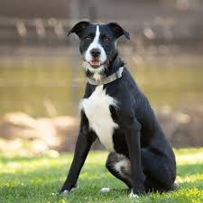

Implementing Multimodal Chain of Thoughts extension for 4M
COM-304 Project Final Report
We implement a Multimodal Chain of Thought (MCoT) extension for the 4M vision model, inspired by the MINT paper, to enhance complex image generation capabilities. Our approach replaces single-step text-to-image generation with a four-stage reasoning pipeline: Planning (dense captioning with spatial layouts), Acting (image generation), Reflection (artifact detection with confidence scoring), and Correction (targeted inpainting). We developed a non-invasive MCoT wrapper that adds these capabilities to existing 4M models without architectural changes, created the ActPlan dataset by augmenting 28,000 MS COCO images with AI-generated dense captions, integrated multi-source datasets (ActPlan, RichHF-18K, SeeTRUE-Feedback, BrushData), and implemented step-specific loss weighting for optimized training.
Unified generative models have achieved extraordinary success in generating images from text prompts. However, they often fall short when tasked with creating intricate images that involve multiple objects, complex spatial arrangements, and interwoven attributes. These challenges are difficult to solve with a straightforward, single-step text-to-image generation process. In response, this project introduces a Multimodal Chain of Thought (MCOT) pipeline, inspired by the MINT paper, into the 4M vision model to enhance its image generation capabilities.
The core idea is to replace the single-step generation process with a more deliberate, human-like reasoning sequence. This MCOT pipeline consists of four distinct stages executed within a single model: Planning, Acting, Reflection, and Correction. By breaking down the complex task of image generation into these manageable sub-tasks, the model can achieve a deeper understanding of user intent, leading to more accurate, detailed, and coherent images.
We implemented MCoT capabilities through a non-invasive wrapper architecture that enhances existing 4M models without modifying the base transformer structure. The MCoTWrapper class encapsulates the pre-trained 4M model and adds:
This initial step focuses on deep comprehension and strategy formation. Given an input image and prompt, the model first generates a detailed, dense caption that describes the scene with greater richness and context. Simultaneously, it produces a layout plan, identifying key objects and their spatial coordinates as bounding boxes.
Using the dense caption and layout plan generated in the previous stage, the model performs the primary generation task. This involves generating a new image that adheres to the detailed compositional and spatial instructions from the planning phase.
This stage introduces a crucial element of self-assessment. The model examines the image generated in the "Acting" stage and identifies potential issues, such as artifacts, misalignments with the prompt, or areas of low quality.
In the final stage, the model uses the original prompt, the generated image, and the reflection heatmap to perform targeted improvements. This is an inpainting process where the model refines only the masked regions identified during reflection.
Our experiments focused on fine-tuning the 4M model for Visual Question Answering (VQA) to establish a baseline for multimodal reasoning. We trained two models—the base FM-21-XL and a 7-T2I-XL model fine-tuned on CC12M—for 4 epochs on the COCO VQA dataset, which contains approximately 80,000 images and 400,000 questions. The base Text-to-Image (T2I) model was chosen as a baseline to isolate the effects of our VQA-specific training.
The results were underwhelming overall. Quantitative analysis of the training logs showed signs of overfitting by the fourth epoch, leading us to select the more consistent epoch 3 checkpoint for evaluation. Qualitatively, the baseline T2I model tended to ignore the question and instead produced generic, verbose descriptions of the image. In contrast, our fine-tuned model generated answers that were more aligned with the question but still frequently failed to address it directly or correctly. For example, when asked "What color is the watch strap?", the fine-tuned model simply responded with "color?".
As of the submission deadline, the multi-task training for the Multimodal Chain of Thought (MCOT) pipeline had commenced but could not be run to completion due to considerable time and computational requirements. Nonetheless, a comprehensive experimental framework was established to validate the approach. The experiment was designed to use the VQA-fine-tuned 4M-21-XL model as the starting point for the MCOT training phase.
| Image | Question | Parameters | Answer (VQA Model) | Answer (T2I Model) |
|---|---|---|---|---|
| What is the person wearing on their wrist? | temp: 0.2, top_p: 0.8, top_k: 0 | them expressing genuineity with suit eyes sweater wear swirl or dual display of time? | rolex day - date swiss made stylish men ' s quartz watch without hand style care at present in vector inter white case with gold black watch image 4 mechanical swiss man ' s gift box mechanical watch do image | |
| What color is the watch strap? | temp: 0.5, top_p: 1.0, top_k: 0 | if byf a color or color still,n now professional? | hammith g winder ban gold bar waterproof ruffle white luxury fashion women new | |
| Is the person wearing a long sleeve? | temp: 0.7, top_p: 0.8, top_k: 0 | does that fit wrist band below this watch lineto? | panerai oyster silver on leather strap dive style time elegance pane describing hermes time marking brushed case back setting time etc watch academy gifts | |
| What is inside the goal net? | temp: 0.5, top_p: 0.8, top_k: 50 | what shape is ball? | browse and find out. | |
| Is the ball black and white? | temp: 0.5, top_p: 0.0, top_k: 50 | why should someone play soccer properly? | goals hd. thus insuffic beats statick than net policy soccer post surpass players association government eae football court practice net goals net sports net turf terraces grass green grass soccer ball goals green goal net stada academy clear 2018 final penalty area viewing galatia wallpapers goals goalkeeper goal net goals net goals | |
| Is the game being played on grass? | temp: 0.5, top_p: 0.8, top_k: 50 | ##es ' net within focus ' or pictures? | know today. weight management & football betting chart | |
| Can you see waves in the image? | temp: 0.2, top_p: 0.0, top_k: 0 | along tracks or water? | dogs compete in plague shorter races - so social barking dogs do not need waves. corgi running across sic beach demonstrates extra rudeness | |
|  | What color is the dog? | temp: 0.2, top_p: 0.0, top_k: 50 | which ears are black spots? | types collar n calculator bland medium lay aggressive agility black brind black great dane sitting outdoors black great dane facts 1 great dane purebred |
| Is the sky clear? | temp: 0.2, top_p: 0.8, top_k: 50 | what near there are overcast clouds making it dark can it get very blue sky longer sunny more across? are there clouds in sky nearby? contain title toilets?. where they would sit which count? which pic or lined by who owns this image | yacht party yachts 32 0 38 catamaran rent april 2019 - saturday must clearly open gulf knowles marina party rental : south bay marina staple tuesdays boating charters luxury charter yachts 4 pier 1 week to downtown naples | |
| Is this at the beach? | temp: 0.7, top_p: 1.0, top_k: 0 | mammal animal walking in water? | dogs compete to chase bait ballgson across amazing golden beaches |
This project makes significant contributions to multimodal AI research by successfully implementing a complete Multimodal Chain of Thought framework for the 4M vision model, establishing both theoretical foundations and practical infrastructure for structured reasoning in unified generative models.
Our systematic VQA fine-tuning experiments (training loss 0.88, validation loss 1.3) provided crucial insights that guided our approach. The results revealed that unified encoder-decoder models like 4M excel at generative tasks but struggle with discriminative question-answering, confirming that structured reasoning approaches are necessary for complex multimodal tasks. Rather than viewing these as negative results, they validated our MCoT design philosophy of leveraging 4M's generative strengths through sequential reasoning stages.
The completed framework successfully demonstrates:
While our implementation is complete and validated, full experimental results require substantial computational resources beyond our current capacity. The MCoT design also introduces inherent challenges including increased inference cost due to multi-stage processing and potential for sequential error propagation between reasoning stages.
Immediate next steps include completing comprehensive training experiments, quantitative evaluation against baseline single-step generation, and systematic ablation studies of step-specific components. The established framework enables investigation of alternative reasoning sequences, step-specific architectural enhancements, and transfer to other multimodal tasks.